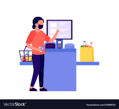
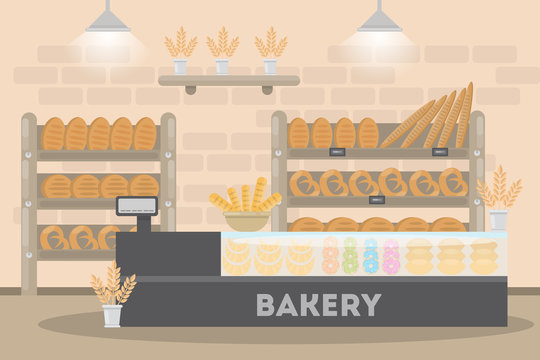

About Me (pissedoffpenguin000)
Computer Scientist excited about learning UI/UX. Trying to demystify the mysteries of frontend
Projects
Daylight Redesign

Description: Designed an interactive interface for Daylight, a current Y-combinator participant. Mocked-up a new interface for their app to solve major issues.
Skills: HTML/CSS, JavaScript, Figma, Teamwork, Sketching, Brainstorming
Berkshire Hathaway Redesign
Description: Selected a simple website, Berkshire Hathaway's main page, to redesign the entire website. Identified UI/UX flaws, made low-fidelity and high-fidelity mock-ups, and built the responsive redesigned webpage using HTML and CSS.
Skills: HTML/CSS, JavaScript, Balsamiq, Figma, Responsive Test Tool
Deep dive of cash register

Description: Selected an interface, the Self-Checkout Register at Whole Foods, to record user observations and interactions. Then designed personas based on these observations and designed a storyboard for the user experienc of the register.
Skills: Storyboarding, Sketches, User Interviews, Personas Creation
Bakery

Description Created a list-based interface for a bakery that allows users to filter, sort, and buy products of the bakery. Developed an interactive interface using React.
Skills: React, JavaScript, CSS, Figma, Planning